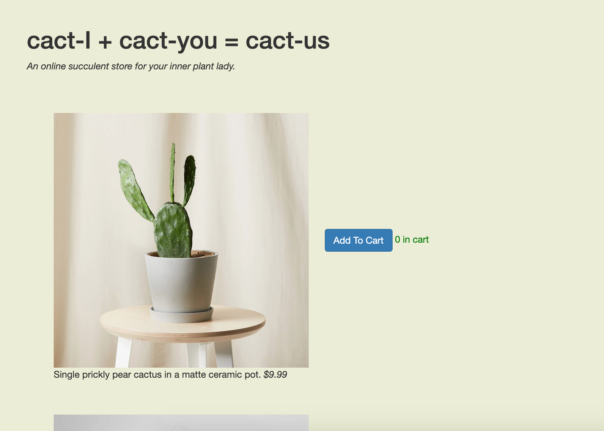
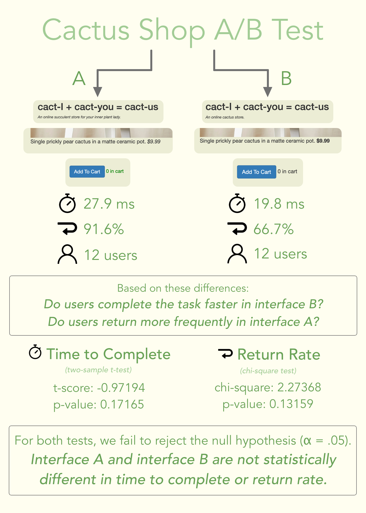

A/B Testing
Statistical analysis for changes in a cactus shop interface
Context: UI/UX Assignment
Task: Implement an A/B test for a mock cactus shop website.
Skills used: Data collection, t-test analysis, chi-square analysis
At a Glance
- I ran an end-to-end A/B test, collecting and analyzing data on user behavior as it responded to interface changes.
- My user group was cactus shop users, formed with my college peers.
- An A/B test allowed to quantify the impact of an interface and test intuitions for statistical significance.
Part 1: Finding the Changes
I first modified a template to create two versions of a cactus shop website. These two versions would be used for our A/B test.
A

B

I was curious whether minute changes in the interface would have significant effects on the metrics I'd be testing. As such, I changed the page subheading, the font of the price (italic vs. bold), and the color of the item count.
Part 2: Finding Hypotheses
I tested two metrics for my A/B test. The first was the time to complete the user task: adding at least $150 of cacti to the cart. The second was the return rate: how often users went to the checkout page and back to the buying page.- I hypothesized users would spend less time buying cacti in interface B with the bolded price and a shorter subheading.
- I hypothesized users would return to the buying page more often in interface A with the colorful cart counts (since cart counts weren't available on the cart page).
Part 3: Finding Data
I tasked users to add at least $150 worth of cacti to the cart. I fielded users through class as well as by messaging my friends. I then extracted user logs through Heroku and filtered them using a given script. I manually calculated each user's metrics and ran the aggregate data through my own script that applied the statistical tests.Part 4: The Findings
I created an infographic to display the results of the tests. Interfaces A and B were not statistically different in time to completion or return rate.

Major Takeaways
It all comes down to sample size.- My sample size was very low, so there wasn’t enough statistical power to substantiate the observed difference in means.
- My users were not acting naturally, especially since my classmates participated in my A/B test among many others. This limited the results.
- It is still unclear whether minute changes can have significant effects on user behavior. Larger design changes, like layout or navigation, are more likely to have significant effects.